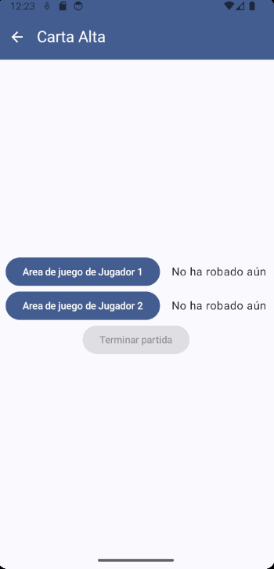
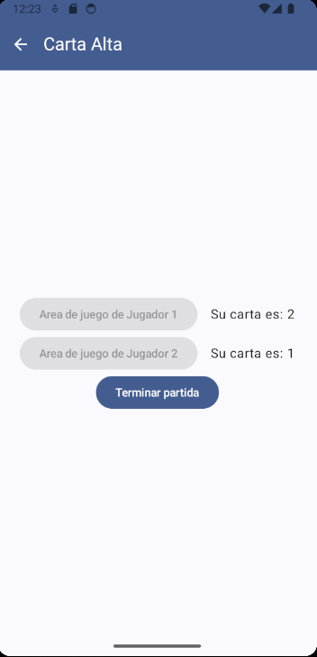
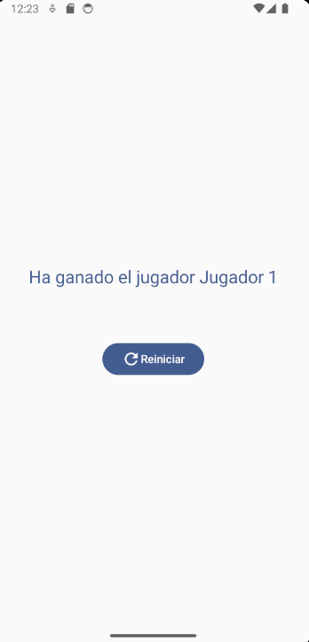

Una pantalla de Home:

La pantalla de Home simplemente debe contener esos tres elementos tal y como aparecen en la imagen.
Para conseguir un resultado idéntico se puede usar la tipografía titleLarge por defecto para el título y la tipografía bodyLarge para el subtítulo. El color de los textos es primary.
Es importante intentar mantener las Strings en recursos para no hardcodear.
Una pantalla de Game:

En la pantalla de juego debemos añadir una barra superior con el título correspondiente y un botón para navegar de vuelta a la pantalla de Home. Los colores de la barra son primary para el fondo y onPrimary para todo lo demás.
En el contenido de la pantalla debemos tener 3 botones. Dos para que cada jugador robe su carta y otro para llevarnos a la pantalla de GameOver tras jugar.

Los botones de cada jugador solo deben poder usarse una vez por partida, de forma que deben desactivarse tras la tirada. A la derecha de cada botón debe aparecer el número de la carta que ha sacado el jugador (un número entre 1 y 13 aleatorio). Pero antes de jugar debe indicarse que todavía no ha robado carta, tal y como se muestra en las imágenes.

Una vez ambos jugadores roben su carta, debe activarse el tercer botón que nos llevará a la pantalla de GameOver pasando el ganador o indicando si han empatado en caso de que ambos tengan el mismo valor en la carta que han robado.
Una pantalla de GameOver:

En esta pantalla tan solo tendremos el resultado de quién ha ganado o si ha ocurrido un empate, dependiendo de lo que haya ocurrido en la pantalla anterior.
Además tendremos un botón para reiniciar el juego que nos llevará a la pantalla de Home y eliminará la posibilidad de volver a esta pantalla tras pulsarlo a través de los gestos o el botón de 'atrás' del teléfono.
Para un resultado óptimo, de nuevo el texto debe tener una tipografía por defecto titleLarge y un color primary. El Spacer que separa el texto del botón es de 64dp.
En caso de empate: